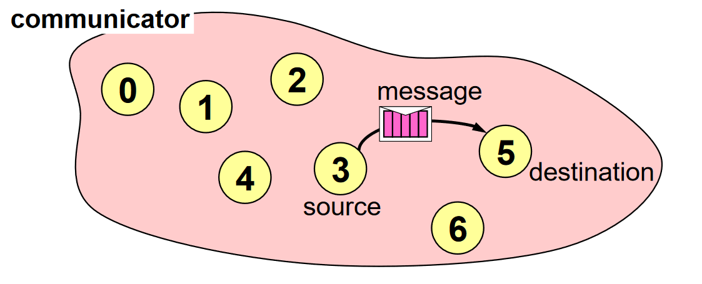

Point to point communication
This is the simplest form of message passing, where one process sends message to another. Although, this can be of two types, namely synchronous and asynchronous.
The important thing to note here is that the communication between two process takes place within a communicator. The source process sends message to the destination process. While processes are identified by their ranks in the communicator.
from mpi4py import MPI
import numpy
comm = MPI.COMM_WORLD
rank = comm.Get_rank()
if rank == 0:
data = {'a': 7, 'b': 5.5}
comm.send(data, dest=1)
elif rank == 1:
data = comm.recv(source=0)
print('On process 1, data is ',data)
In this example, a dictionary object data is transmitted from rank 0 to rank 1, performed by the comm.send command.
- comm.send(obj, dest, tag)
Sends obj to dest. With a tag (piggyback information) transfered with the data.
- Parameters:
obj – Any python object that can be serialized with the pickle method.
dest – int
tag – int
- Return type:
None
- comm.recv(source, tag)
Recievs obj from source.
- Parameters:
source – int
tag – int
- Return type:
Any
Any such object such as a string, integer or a Numpy array can be send this way.
It should also be noted that send is compatible with recv and same is observed between Send and Recv.
For a successful point-to-point communication,
Sender must specify a valid destination rank.
Reciever must specify a valid source rank.
Communicator must be same.
Sending and recieving data type should match.
Sending and recieving tags must also match [1].
Footnotes
Read about other MPI functions here.